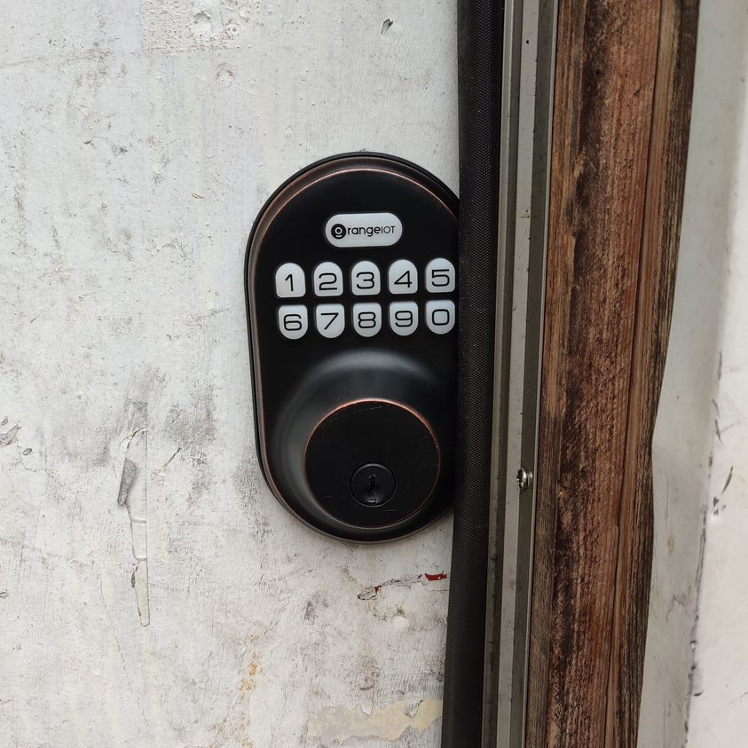

Mobile uploads
I believe we need to seriously look at homelessness being a disability. When you have been stripped of fundamental necessities to live your ability to function in regular society crumbles.
Take keys. And IDs. And Prepaid credit cards. And phones.
They all constantly get lost or stolen.
So we have moved to push button locks on the @[112716880296603:274:Houseless Movement] House. Keys were absolutely impossible to maintain.
The day center and shower are open from 9to9 to the public. But we lock it at night. Women who live with us get the access code to use the bathroom at night.